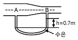
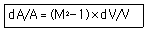
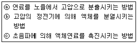
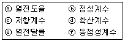
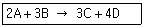
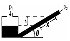

가스기사 (2013-08-18 기출문제)
1과목: 가스유체역학
1. 압축성 유체의 기계적 에너지 수지식에서 고려하지 않는 것은?
- 내부에너지
- 위치에너지
- 엔트로피
- 엔탈피
(정답률: 75%)

2. 펌프의 전효율(ηt)을 구하는 식은? (단, ηm는 기계효율, ηv는 체적효율, ηh는 수력효율이다.)
- ηt＝ηmηvηh
- ηt＝(ηmηh)/ηv
- ηt＝1/(ηmηvηh)
- ηt＝(ηhηv)/ηm
(정답률: 77%)
3. 원심펌프에서 발생하는 공동현상(Cavitation)에 대한 설명으로 옳은 것은?
- 압력이 액체의 증기압보다 높을 때 발생한다.
- 압력이 액체의 증기압보다 낮을 때 발생한다.
- 압력이 액체의 증기압과 같을 때 발생한다.
- 압력이 대기압보다 낮을 때 발생한다.
(정답률: 62%)
4. 깊이 1000m인 해저의 수압은 계기압력으로 몇 kgf/cm2인가? (단, 해수의 비중량은 1025kgf/m3이다.)
- 100
- 102.5
- 1000
- 1025
(정답률: 77%)
5. 내경이 0.⑤26m인 철관에 비압축성 유체가 9.085m3/h로 흐를 때의 평균유속은 약 몇 m/s인가? (단, 유체의 밀도는 200kg/m3이다.)
- 1.16
- 3.26
- 4.68
- 11.6
(정답률: 69%)
6. 비중이 0.9인 액체가 나타내는 압력이 1.8kgf/cm2일 때 이것은 수두로 몇 m 높이에 해당하는가?
- 10
- 20
- 30
- 40
(정답률: 75%)
7. 중력에 대한 관성력의 상대적인 크기와 관련된 무차원의 수는 무엇인가?
- Reynolds수
- Froude수
- 모세관수
- Weber수
(정답률: 69%)
8. Υ, V, d, ρ, μ로 만들 수 있는 독립적인 무차원수는 몇 개인가? (단, Υ는 전단응력, V는 속도, d는 지름, ρ는 밀도, μ는 점성계수이다.)
- 1
- 2
- 3
- 4
(정답률: 59%)
9. 그림과 같이 물이 흐르는 관에 U자 수은관을 설치하고, A지점과 B지점 사이의 수은 높이 차(h)를 측정하였더니 0.7m이었다. 이때 A점과 B점 사이의 압력차는 약 몇 kPa인가? (단, 수은의 비중은 13.6이다.)

- 8.64
- 9.33
- 86.49
- 93.3
(정답률: 52%)
10. 물리량의 단위를 잘못 표현한 것은?
- 표면장력 : N/m
- 운동량 : kg·m/s
- 전단응력 : N/m2
- 일 : N/m3
(정답률: 60%)
11. 비압축성 유체가 단면적이 점차 축소되는 관속을 흐를 때 일어나는 현상으로 옳지 않은 것은?
- 유속이 증가한다.
- 유량이 감소한다.
- 압력이 감소한다.
- 마찰손실이 커진다.
(정답률: 80%)
12. 지름이 3m 원형 기름탱크의 지붕이 평평하고 수평이다. 대기압이 1atm일 때 대기가 지붕에 미치는 힘은 몇 kgf인가?
- 7.3×102
- 7.3×103
- 7.3×104
- 7.3×105
(정답률: 70%)
13. 이상기체에서 음속은 온도와 어떠한 관계가 있는가?
- 온도의 제곱근에 반비례한다.
- 온도의 제곱근에 비례한다.
- 온도의 제곱에 비례한다.
- 온도의 제곱에 반비례한다.
(정답률: 71%)
14. 1차원 공기 유동에서 수직충격파(normal shock wave)가 발생하였다. 충격파가 발생하기 전의 Mach 수가 2이면, 충격파가 발생한 후의 Mach 수는? (단, 공기는 이상기체이고, 비열비는 1.4이다.)
- 0.317
- 0.471
- 0.577
- 0.625
(정답률: 37%)
15. 캐비테이션 발생에 따른 현상으로 가장 거리가 먼 것은?
- 소음과 진동 발생
- 양정곡선의 증가
- 효율곡선의 저하
- 깃의 침식
(정답률: 73%)
16. 베르누이 방정식이 적용되는 조건이 아닌 것은?
- 두 점은 같은 유선상에 있다.
- 정상상태의 흐름이다.
- 마찰이 없는 흐름이다.
- 압축성 유체의 흐름이다.
(정답률: 74%)
17. 유속을 무시할 수 있고 온도가 30°C인 저장탱크로부터 공기가 분출되고 있다. 이 흐름은 정상상태 단열이라면 Mach 수 2.5인 점의 기체온도는 약 몇 ℃인가? (단, 비열비는 1.4이다.)
- 108
- 138
- -108
- -138
(정답률: 42%)
18. 압력이 103N/m2이고 온도가 77°C인 질소(R＝0.26kJ/kg·K)의 밀도(kg/m3)는?(오류 신고가 접수된 문제입니다. 반드시 정답과 해설을 확인하시기 바랍니다.)
- 0.011
- 0.212
- 1.13
- 1.21
(정답률: 36%)
19. 관 내의 압축성 유체의 경우 단면적 A와 마하수 M, 속도 V 사이에 다음과 같은 관계가 성립한다고 한다. 마하수가 2일 때 속도를 2% 감소시키기 위해서는 단면적을 몇 % 변화시켜야 하는가?

- 6% 증가
- 6% 감소
- 4% 증가
- 4% 감소
(정답률: 71%)
20. 극 초음속흐름에서 Mach값(M)의 범위로 가장 옳은 것은?
- M＜0.3
- 0.3＜M＜1
- 1＜M＜2
- M＞3
(정답률: 72%)
2과목: 연소공학
21. 다음 중 가연물의 구비조건이 아닌 것은?
- 산소와 친화력이 클 것
- 반응열이 클 것
- 표면적이 클 것
- 열전도도가 클 것
(정답률: 71%)
22. 에너지보존의 법칙을 공식으로 표현하면 Q-W＝ΔH이며, 엔탈피는 열역학함수의 하나로 H＝U＋PV로 정의된다. Q와 U의 의미를 올바르게 나열한 것은?
- Q＝열량, U＝속도
- Q＝내부에너지＋외부에너지, U＝속도
- Q＝열량, U＝내부에너지
- Q＝내부에너지＋외부에너지, U＝내부에너지
(정답률: 73%)
23. 폭발의 영향범위는 스켈링(Scaling)법칙을 이용한다. 다음 중 옳게 표현한 것은? (단, WTNT : TNT당량(kg), ΔHC : 연소열, 1100 : 저위발열량(kcal/kg), WC : 누출된 가스 등의 질량(kg), η : 폭발효율이다.)
- WTNT＝(ΔHC×WC×1100)/η
- WTNT＝(1,100×WC×η)/ΔHC
- WTNT＝(ΔHC×WC×η)/1100
- WTNT＝(ΔHC×WC)/η
(정답률: 58%)
24. 다음 중 내연기관의 화염으로 가장 적당한 것은?
- 층류, 정상 확산 화염이다.
- 층류, 비정상 확산 화염이다.
- 난류, 정상 예혼합 화염이다.
- 난류, 비정상 예혼합 화염이다.
(정답률: 70%)
25. 과잉공기에 대하여 가장 바르게 설명한 것은?
- 불완전연소의 공기량과 완전연소의 공기량 차
- 완전연소를 위하여 필요로 하는 이론공기량보다 많이 공급된 공기
- 완전연소를 위한 공기
- 1차 공기가 부족하였을 때 더 공급해 주는 공기
(정답률: 87%)
26. 폭발에 관한 가스의 성질을 잘못 설명한 것은?
- 안전간격이 클수록 위험하다.
- 연소속도가 클수록 위험하다.
- 폭발범위가 넓은 것이 위험하다.
- 압력이 높아지면 일반적으로 폭발범위가 넓어진다.
(정답률: 77%)
27. 브레이톤 사이클에서 열은 어느 과정을 통해 흡수되는가?
- 정적과정
- 등온과정
- 정압과정
- 단열과정
(정답률: 47%)
28. 열효율을 높이는 방법이 아닌 것은?
- 연속적인 조업을 피한다.
- 연소가스 온도를 높인다.
- 열손실을 줄인다.
- 연소기구에 알맞은 적정연료를 사용한다.
(정답률: 76%)
29. 1mol의 이상기체(Cv＝3/2R)가 40°C, 35atm으로부터 1atm까지 단열가역적으로 팽창하였다. 최종 온도는 얼마인가?
- 97K
- 88K
- 75K
- 60K
(정답률: 53%)
30. 최소착화에너지(MIE)의 특징에 대한 설명으로 옳은 것은?
- 최소착화에너지는 압력증가에 따라 감소한다.
- 산소농도가 많아지면 최소착화에너지는 증가한다.
- 질소농도의 증가는 최소착화에너지를 감소시킨다.
- 일반적으로 분진의 최소착화에너지는 가연성가스보다 작다.
(정답률: 64%)
31. 다음 중 저위 발열량(HL)과 고위 발열량(Hn)의 관계식에서 맞는 것은? (단, H : 수소, W : 전수분을 의미한다.)
- HL＝Hn＋600 (9H - W) kcal/kg
- HL＝Hn - 600 (9H - W) kcal/kg
- HL＝Hn＋600 (9H＋W) kcal/kg
- HL＝Hn - 600 (9H＋W) kcal/kg
(정답률: 73%)
32. 다음 중 연소에 관한 설명으로 옳지 않은 것은?
- 연소는 연료의 산화 발열 반응이므로 연소속도란 산화하는 속도라 할 수 있다.
- 석탄, 장작과 같이 처음에 불꽃을 일으키며 일어나는 연소를 표면연소라 한다.
- 화염의 종류는 화학적인 성질에 따라 산화염과 환원염으로 나뉜다.
- 고체 및 액체 연료는 고온의 가스 분위기에서 먼저 가스화 된다.
(정답률: 57%)
33. 출력 130000kW의 화력발전소에서 연소하는 석탄의 발열량이 6200kcal/kg, 발전 효율이 37%라면 시간당 석탄 소모량은 몇 톤인가?
- 39. 1
- 42.2
- 45.6
- 48.7
(정답률: 46%)
34. 다음 [보기]는 액체연료를 미립화시키는 방법을 설명한 것이다. 옳은 것을 모두 고른 것은?

- ⓐ
- ⓐ, ⓑ
- ⓑ, ⓒ
- ⓐ, ⓑ, ⓒ
(정답률: 84%)
35. 체적이 0.1 m3인 용기 안에 메탄(CH4)과 공기 혼합물이 들어 있다. 공기는 메탄을 연소시키는데 필요한 이론 공기량보다 20%가 더들어 있고 연소 전 용기의 압력은 300kPa이고, 온도는 90°C이다. 연소 전 용기 안에 있는 메탄의 질량은 약 몇 kg인가? (단, 질소와 산소의 혼합비율은 79 : 21이다.)
- 0.0128
- 0.0438
- 0.0749
- 0.1⑤3
(정답률: 45%)
36. 단열변화에서 엔트로피 변화량은 어떻게 되는가?
- 일정치 않음
- 증가
- 감소
- 불변
(정답률: 71%)
37. 증기의 성질에 대한 설명으로 틀린 것은?
- 증기의 압력이 높아지면 엔탈피가 커진다.
- 증기의 압력이 높아지면 현열이 커진다.
- 증기의 압력이 높아지면 포화 온도가 높아진다.
- 증기의 압력이 높아지면 증발열이 커진다.
(정답률: 40%)
38. 다음 중 차원이 같은 것 끼리 나열된 것은?

- ⓐ, ⓑ
- ⓒ, ⓔ
- ⓓ, ⓕ
- ⓔ, ⓕ
(정답률: 73%)
39. 다음과 같은 반응에서 A의 농도는 그대로 하고 B의 농도를 처음의 2배로 해주면 반응속도는 처음의 몇 배가 되겠는가?

- 2배
- 4배
- 8배
- 16배
(정답률: 71%)
40. 발열량에 대한 설명으로 틀린 것은?
- 연료의 발열량은 연료단위량이 완전연소했을 때 발생한 열량이다.
- 발열량에는 고위발열량과 저위발열량이 있다.
- 저위발열량은 고위발열량에서 수증기의 잠열을 뺀 발열량이다.
- 발열량은 열량계로는 측정할 수 없어 계산식을 이용한다.
(정답률: 79%)
3과목: 가스설비
41. 검사에 합격한 가스용품에는 국가표준기본법에 따른 국가 통합인증마크를 부착하여야 한다. 다음 중 국가통합인증마크를 의미하는 것은?
- KA
- KC
- KE
- KS
(정답률: 77%)
42. 내부 용적이 47L인 용기를 내압시험에서 3MPa의 수압을 가하니 용기의 내부용적이 47.125L로 되었다. 다시 압력을 제거하여 대기압 상태로 하였더니 용기의 내부 용적이 47.002L가 되었다면 항구증가율은?
- 0.8%
- 1.3%
- 1.6%
- 2.6%
(정답률: 59%)
43. 최고 충전압력이 7.3MPa, 동체의 내경이 326㎜, 허용응력 240N/mm2인 용접용기 동판의 두께는 얼마인가? (단, 용접효율은 1, 부식 여유는 고려하지 않는다.)
- 3㎜
- 4㎜
- 5㎜
- 6㎜
(정답률: 47%)
44. 압력 2MPa 이하의 고압가스 배관설비로서 곡관을 사용하기가 곤란한 경우 가장 적정한 신축이음매는?
- 벨로우즈형 신축이음매
- 루프형 신축이음매
- 슬리브형 신축이음매
- 스위블형 신축이음매
(정답률: 70%)
45. 금속재료에 관한 일반적인 설명으로 옳지 않은 것은?
- 황동은 구리와 아연의 합금이다.
- 뜨임의 목적은 담금질 후 경화된 재료에 연성을 주는 것이다.
- 철에 크롬과 니켈을 첨가한 것은 스테인리스강이다.
- 청동은 강도는 크나 주조성과 내식성은 좋지 않다.
(정답률: 70%)
46. 도로에 매설되어 있는 도시가스 배관의 누출검사방법으로 가장 적절한 것은?
- 공기보다 무거운 도시가스는 수소염 이온화식 가스 검지기를 이용하여 누출 유무를 검지할 수 없다.
- 배관의 노선상을 50m 간격으로 깊이 50㎝ 이상으로 보링을 하여 수소염 이온화식 가스검지기 등을 이용하여 가스 누출여부를 검사한다.
- 배관의 노선상은 적당한 간격을 정하여 누출유무를 검사한다.
- 아스팔트 포장 등 도로구조상 보링이 곤란한 경우에는 누출검사를 생략한다.
(정답률: 61%)
47. 35°C에서 최고 충전압력이 15MPa로 충전된 산소용기의 안전밸브가 작동하기 시작하였다면 이때 산소용기 내의 온도는 약 몇 ℃인가?
- 137°C
- 142°C
- 150°C
- 165°C
(정답률: 39%)
48. 다음 중 수소의 공업적 제법이 아닌 것은?
- 수성가스법
- 석유 분해법
- 천연가스 분해법
- 하버 보시법
(정답률: 65%)
49. 증기 압축 냉동사이클에서 단열팽창 과정은 어느 곳에서 이루어지는가?
- 압축기
- 팽창밸브
- 응축기
- 증발기
(정답률: 68%)
50. LNG에 대한 설명 중 틀린 것은?
- LNG의 주성분은 메탄이다.
- LNG는 천연가스를 -162°C까지 냉각, 액화한 것이다.
- 저온 저장탱크에 저장된 LNG는 대부분 액화하여 사용한다.
- 대량의 천연가스를 액화하는 데에는 캐스케이드 사이클이 사용된다.
(정답률: 53%)
51. LNG 저장탱크에서 주로 사용되는 보냉재가 아닌 것은?
- 폴리우레탄폼(PUF)
- PIR폼
- PVC폼
- 펄라이트
(정답률: 56%)
52. 일정 압력 이하로 내려가면 가스 분출이 정지되는 구조의 안전밸브는?
- 스프링식
- 파열식
- 가용전식
- 박판식
(정답률: 79%)
53. 일반도시가스사업의 가스공급시설 중 LPG 저장탱크가 설치된 장소와 차량이 통행하는 통로사이에는 방호구조물을 설치하여야 한다. 방호구조물 설치에 대하여 바르게 설명 한 것은?
- 높이 30㎝ 이상, 두께 30㎝ 이상의 철근 콘크리트 구조물을 1m 이내의 간격으로 설치한다.
- 높이 60㎝ 이상, 두께 30㎝ 이상의 철근 콘크리트 구조물을 1m 이내의 간격으로 설치한다.
- 높이 30㎝ 이상, 두께 30㎝ 이상의 철근 콘크리트 구조물을 2m 이내의 간격으로 설치한다.
- 높이 60㎝ 이상, 두께 30㎝ 이상의 철근 콘크리트 구조물을 2m 이내의 간격으로 설치한다.
(정답률: 55%)
54. 암모니아 합성가스 분리장치에서 저온에서 디엔류와 반응하여 폭발성의 껌(Gum)상의 물질을 만드는 가스는?
- 일산화질소
- 벤젠
- 탄산가스
- 일산화탄소
(정답률: 48%)
55. 고압가스 일반제조시설에 설치하는 각종 가스설비에 대한 설명으로 옳은 것은?
- 탑류, 저장탱크, 열교환기, 회전기계, 벤트스택 등은 공동으로 접지하여야 한다.
- 수평원통형 저장탱크의 가대 지지간격(span)이 8m 이상인 것은 고정식 난간을 설치한다.
- 지반의 허용지지력도의 값이 당해 가스설비 등 그 내용물 및 그 기초에 의한 단위면적당 하중을 초과하도록 공사하여야 한다.
- 독성가스를 저장탱크에 충전할 때 독성가스가 저장탱크 내용적의 95%를 초과하면 자동적으로 이를 검지할 수 있도록 액면검지장치 등을 설치하여야 한다.
(정답률: 52%)
56. 연소기용 금속플렉시블 호스의 성능시험밤법으로 가장 적정한 것은?
- 기밀성능은 0.02MPa, 1분간 공기압에서 실시 후 누출이 없어야 한다.
- 내압성능은 0.8MPa, 30초간, 공기압에서 실시 후 누출, 그 밖에 이상이 없어야 한다.
- 내비틀림성능은 90° 비틀림을 1회당 5초의 균일한 속도로 좌우 100회 실시하여 파손 등 이상이 없어야 한다.
- 내구성능 중 기밀성은 반복부착시험 후 0.⑤MPa, 30초간 실시 후 누출이 없어야 한다.
(정답률: 37%)
57. 터보형 압축기에 대한 설명으로 옳지 않은 것은?
- 연속 토출로 맥동현상이 적다.
- 운전 중 서징현상이 발생하지 않는다.
- 유량이 커서 설치면적을 적게 차지한다.
- 윤활유가 필요 없어 기체에 기름의 혼입이 적다.
(정답률: 48%)
58. 가스배관에 대한 설명 중 옳은 것은?
- SDR 21 이하의 PE배관은 0.25MPa 이상 0.4MPa 미만의 압력에 사용할 수 있다.
- 배관의 규격 중 관의 두께는 스케줄 번호로 표시하는데 스케줄 수 40은 살두께가 두꺼운 관을 말하고, 160 이상은 살두께가 가는 관을 나타낸다.
- 강괴에 내재하는 수축공, 국부적으로 접합한 기포나 편석 등의 개재물이 압착되지 않고 층상의 균열로 남아 있어 강에 영향을 주는 현상을 라미네이션이라 한다.
- 재료가 일정온도 이하의 저온에서 하중을 변화시키지 않아도 시간의 경과함에 따라 변형이 일어나고 끝내 파단에 이르는 것을 크리프현상이라 하고, 한계온도는 -20°C 이하이다.
(정답률: 71%)
59. 고압의 액체를 분출할 때 그 주변의 액체가 분사류에 따라서 송출되는 구조로서 노즐, 슬로우트, 디퓨져 등으로 구성되어 있는 펌프는?
- 마찰펌프
- 와류펌프
- 기포펌프
- 제트펌프
(정답률: 71%)
60. 용기내장형 가스난방기에 대한 설명으로 옳지 않은 것은?
- 난방기는 용기와 직결되는 구조로 한다.
- 난방기의 콕은 항상 열림 상태를 유지하는 구조로 한다.
- 난방기는 버너 후면에 용기를 내장할 수 있는 공간이 있는 것으로 한다.
- 난방기 통기구의 면적은 용기 내장실 바닥면적에 대하여 하부는 5%, 상부는 1% 이상으로 한다.
(정답률: 66%)
4과목: 가스안전관리
61. 가스 안전성평가를 실시할 때 적용하는 안전성평가 기법이 아닌 것은?
- 체크리스트기법
- 사건수분석기법
- 무작위추출기법
- 작업자실수분석기법
(정답률: 72%)
62. 가연성가스가 폭발할 위험이 있는 농도에 도달할 우려가 있는 장소로서 “2종 장소”에 해당되지 않는 것은?
- 상용의 상태에서 가연성가스의 농도가 연속해서 폭발 하한계 이상으로 되는 장소
- 밀폐된 용기가 그 용기의 사고로 인해 파손될 경우에만 가스가 누출할 위험이 있는 장소
- 환기장치에 이상이나 사고가 발생한 경우에는 가연성 가스가 체류하여 위험하게 될 우려가 있는 장소
- 1종 장소의 주변에서 위험한 농도의 가연성가스가 종종 침입할 우려가 있는 장소
(정답률: 67%)
63. 고압가스 용기제조 기술기준에 대한 설명으로 옳지 않은 것은?
- 용기는 열처리(비열처리재료로 제조한 용기의 경우에는 열가공)를 한 후 세척하여 스케일·석유류 그 밖의 이물질을 제거할 것
- 용기 동판의 최대 두께와 최소 두께와의 차이는 평균두께의 20% 이하로 할 것
- 열처리 재료로 제조하는 용기는 열가공을 한 후 그 재료 및 두께에 따라서 적당한 열처리를 할 것
- 초저온용기는 오스테나이트계 스테인리스강 또는 티타늄합금으로 제조할 것
(정답률: 63%)
64. 고압가스 저장탱크 실내설치의 기준으로 틀린 것은?
- 가연성가스 저장탱크실에는 가스누출검지경보장치를 설치한다.
- 저장탱크실은 각각 구분하여 설치하고 자연환기시설을 갖춘다.
- 저장탱크에 설치한 안전밸브는 지상 5m 이상의 높이에 방출구가 있는 가스방출관을 설치한다.
- 저장탱크의 정상부와 저장탱크실 천장과의 거리는 60㎝ 이상으로 한다.
(정답률: 57%)
65. 액화암모니아 100kg을 충전하기 위한 용기의 내용적은? (단, 충전상수 C는 1.86이다.)
- 186L
- 98L
- 73L
- 54L
(정답률: 59%)
66. 가스밸브와 연소기기(가스레인지 등)사이에서 호스가 끊어지거나 빠진 경우 가스가 계속 누출되는 것을 차단하기 위한 안전장치는?
- 슬레노이드
- 퓨즈콕
- 파사트
- 플레임로드
(정답률: 74%)
67. 액화석유가스를 용기에 의하여 가스소비자에게 공급할 때의 기준으로 옳지 않은 것은?
- 용기가스 소비자에게 액화석유가스를 공급하고자 하는 가스 공급자는 당해 용기가스 소비자와 안전공급계약을 체결한 후 공급하여야 한다.
- 다른 가스 공급자와 안전공급계약이 체결된 용기가스 소비자에게는 액화석유가스를 공급할 수 없다.
- 안전공급계약을 체결한 가스 공급자는 용기가스 소비자에게 지체 없이 소비설비 안전점검표 및 소비자보장책임보험가입확인서를 교부하여야 한다.
- 동일 건축물 내 여러 용기가스 소비자에게 하나의 공급 설비로 액화석유가스를 공급하는 가스 공급자는 그 용기 가스 소비자의 대표자와 안전공급계약을 체결할 수 있다.
(정답률: 66%)
68. LPG 저장설비에 실시하는 지반조사에 대한 설명으로 옳지 않은 것은?
- 1차 지반조사방법은 이너팅을 실시하는 것을 원칙으로 한다.
- 표준관입시험은 N값을 구하는 방법이다.
- 배인시험은 최대 토오크 또는 모멘트를 구하는 방법이다.
- 평판재하시험은 항복하중 및 극한하중을 구하는 방법이다.
(정답률: 67%)
69. 고압가스용 안전밸브 중 공칭 밸브의 크기가 80A일 때 최소 내압시험 유지시간은?
- 60초
- 180초
- 300초
- 540초
(정답률: 59%)
70. 포스겐의 제독제로 가장 적당한 것은?
- 물, 가성소다수용액
- 가성소다수용액, 탄산소다수용액
- 물, 탄산소다수용액
- 가성소다수용액, 소석회
(정답률: 72%)
71. 고압가스제조소 내 매몰배관 중간검사 대상 지정개소의 기준으로 옳은 것은?
- 검사대상 배관길이 100m 마다 1개소 지정
- 검사대상 배관길이 500m 마다 1개소 지정
- 검사대상으로 지정한 부분의 길이 합은 검사대상 총 배관길이의 5% 이상
- 검사대상으로 지정한 부분의 길이 합은 검사대상 총 배관길이의 7% 이상
(정답률: 51%)
72. 어떤 탱크의 체적이 0.5m3이고, 이때 온도가 25°C이다. 탱크내의 분자량 24인 이상기체가 10kg이 들어있을 때 이 탱크의 압력은 약 몇 kg/cm2인가? (단, 대기압은 1.033kg/cm2로 한다.)
- 19
- 21
- 25
- 27
(정답률: 62%)
73. 가스 안전사고를 조사할 때 유의할 사항으로 적합하지 않은 것은?
- 재해조사는 발생 후 되도록 빨리 현장이 변경되지 않은 가운데 실시하는 것이 좋다.
- 재해에 관계가 있다고 생각되는 것은 물적, 인적인 것을 모두 수립, 조사한다.
- 시설의 불안전한 상태나 작업자의 불안전한 행동에 대하여 유의하여 조사한다.
- 재해조사에 참가하는 자는 항상 주관적인 입장을 유지하여 조사한다.
(정답률: 81%)
74. 독성가스제조시설의 시설기준에 대한 설명으로 틀린 것은?
- 독성가스 제조설비에는 그 가스가 누출될 때 이를 흡수 또는 중화할 수 있는 장치를 설치한다.
- 독성가스 제조시설에는 풍향계를 설치한다.
- 저장능력이 1천 톤 이상의 독성가스 저장탱크 주위에는 방류둑을 설치한다.
- 독성가스 저장탱크에는 가스충전량이 그 저장탱크 내용적 90%를 초과하는 것을 방지한다.
(정답률: 66%)
75. 액화석유가스 사용시설 중 배관은 안전상 고정부착되어야 하는데 배관의 관경과 고정거리 간격기준에 관한 것으로 옳은 것은?
- 13mm 미만은 1m 마다
- 13mm 미만은 2m 마다
- 33mm 이상은 2m 마다
- 33mm 이상은 4m 마다
(정답률: 55%)
76. 액화가스를 차량에 적재하여 운반할 때 일정량 이상이면 운반책임자를 동승하도록 되어 있다. 그 기준량으로 옳지 않은 것은?
- C3H8 : 3000kg 이상
- Cl2 : 1000kg 이상
- NH3 : 2000kg 이상
- 02 : 6000kg 이상
(정답률: 58%)
77. 아세틸렌을 용기에 충전할 때에는 미리 용기에 다공질물을 고루 채워야 하는데 이때 다공도는 몇 % 이상이어야 하는지 그 기준값으로 옳은 것은?
- 62% 이상
- 75% 이상
- 92% 이상
- 95% 이상
(정답률: 74%)
78. 고압가스 충전용기의 취급 및 운반에 관한 기준으로 틀린 것은?
- 넘어짐 등으로 인한 충격을 방지하기 위하여 충전용기를 단단하게 묶을 것
- 충격을 최소한으로 방지하기 위하여 고무판가마니 등을 차량 등에 갖추고 이를 사용할 것
- 운반중의 충전용기는 항상 45°C 이하로 유지할 것
- 차량의 최대적재량을 초과하여 적재하지 아니할 것
(정답률: 80%)
79. 가스누출경보 및 자동차단장치의 기능에 대한 설명으로 옳은 것은?
- 경보농도는 가연성가스는 폭발하한계 이하, 독성가스는 TLVTWA 기준농도 이하로 한다.
- 경보를 발신한 후에는 원칙적으로 분위기가스 중 가스농도가 변화하여도 계속경보를 울리고 대책을 강구함에 따라 정지되는 것으로 한다.
- 경보기의 정밀도는 경보농도 설정치에 대하여 가연성가스용에서는 10% 이하. 독성가스용에서는 ±20% 이하로 한다.
- 검지에서 발신까지 걸리는 시간은 경보농도의 1.2배 농도에서 20초 이내로 한다.
(정답률: 47%)
80. 다음 중 공기보다 무거운 가연성가스는?
- 메탄
- 염소
- 부탄
- 헬륨
(정답률: 57%)
5과목: 가스계측기기
81. 수은이나 기름 위에 부자를 띄워 압력을 측정하는 압력계는?
- 액주식 압력계
- 탄성식 압력계
- 침종식 압력계
- 환상천평식 압력계
(정답률: 58%)
82. 측정치가 일정하지 않고 분포 현상을 일으키는 흩어짐 (dispersi on)이 원인이 되는 오차는?
- 개인오차
- 환경오차
- 이론오차
- 우연오차
(정답률: 70%)
83. 막식 가스미터의 부동현상에 대한 설명으로 가장 옳은 것은?
- 가스가 누출되고 있는 고장이다.
- 가스가 미터를 통과하지 못하는 고장이다.
- 가스가 미터를 통과하지만 지침이 움직이지 않는 고장이다.
- 가스가 통과될 때 미터가 이상음을 내는 고장이다.
(정답률: 80%)
84. 가스보일러의 자동연소제어에서 조작량에 해당되지 않는 것은?
- 연료량
- 증기압력
- 연소가스량
- 공기량
(정답률: 48%)
85. 습식 가스미터의 특징이 아닌 것은?
- 계량이 정확하다.
- 사용 중 기차의 변동이 크다.
- 수위조정이 필요하다.
- 설치공간이 크다.
(정답률: 72%)
86. 1기압, 100°C에서 공기의 밀도(g/L)는? (단, 공기는 N2, O2, Ar이 78%. 21%, 1%를 각각 함유하고 있으며, 분자량은 각각 28, 32, 40이다.)
- 0.66
- 0.74
- 0.88
- 0.94
(정답률: 49%)
87. 온도측정기를 사용하여 온도를 측정하였더니 250°C 이었다. 참값이 240°C일 때 오차는 얼마인가?
- 10
- 24
- 25
- 1.04
(정답률: 63%)
88. 관 속을 흐르는 물의 속도를 측정하기 위하여 관의 중심부 아래 피토관을 설치하였다. 이때 피토관 끝에서 측정되는 전압수두는 2.5m이었고 피토관부 옆면에서 측정되는 정압수두가 1.2m이었다. 관속을 흐르는 물의 유속은 약 몇 m/s인가?
- 4
- 5
- 7
- 12
(정답률: 58%)
89. 배기가스 100mL를 채취하여 KOH 30% 용액에 흡수된 양이 15mL이었고, 알칼리성 피로카롤 용액을 통과 후 70mL가 남았으며, 암모니아성 염화 제1구리에 흡수된 양은 1mL이었다. 이때 가스 중 CO2, CO, O2는 각각 몇 %인가?
- CO2 : 15%, CO : 5%, O2 : 1%
- CO2 : 1%, CO : 15%, O2 : 15%
- CO2 : 15%, CO : 1%, O2 : 15%
- CO2 : 15%, CO : 15%, O2 : 1%
(정답률: 65%)
90. 가스미터의 구비조건으로 적당하지 않은 것은?
- 소형이고 계량용량이 클 것
- 가격이 싸고 내구력이 있을 것
- 기차의 변동이 클 것
- 구조가 간단하고 감도가 예민할 것
(정답률: 76%)
91. 캐리어가스와 시료성분가스의 열전도도의 차이를 금속필라멘트 또는 서미스터의 저항변화로 검출하는 가스크로마토그래피 검출기는?
- TCD
- FID
- ECD
- FPD
(정답률: 64%)
92. 경사관 압력계에서 P1의 압력을 구하는 식은? (단, γ : 액체의 비중량, P2 : 가는 관의 압력, θ : 경사각, x : 경사관 압력계의 눈금이다.)

- P1＝P2 / sinθ
- P1＝P2 γ cosθ
- P1＝P2＋γX cosθ
- P1＝P2＋γX sinθ
(정답률: 71%)
93. 유도단위는 어느 단위에서 유도되는가?
- 절대단위
- 중력단위
- 특수단위
- 기본단위
(정답률: 67%)
94. 밸브를 완전히 닫힌 상태로부터 완전히 열린 상태로 움직이는데 필요한 오차의 크기를 의미하는 것은?
- 잔류편차
- 비례대
- 보정
- 조작량
(정답률: 61%)
95. 제어시스템에서 응답이 목표값에 처음으로 도달하는데 걸리는 시간을 의미하는 것은?
- 시간지연
- 상승시간
- 응답시간
- 오버슈트
(정답률: 65%)
96. 공기압식 조절계의 구성요소에 대한 설명으로 옳은 것은?
- 편차를 공기압으로 변환하는 기구를 벨로우즈라고 한다.
- 변환된 공기압을 증폭하는 기구를 파일럿밸브라고 한다.
- 설정값과 측정값의 편차를 검출하는데 플래퍼가 사용된다.
- 각종 제어동작을 부여하는데 노즐과 디스크가 사용된다.
(정답률: 47%)
97. 제백효과(Seebeck effect)를 이용한 온도계는?
- 열전대온도계
- 서모컬러온도계
- 광고온계
- 서미스터온도계
(정답률: 70%)
98. 다음 중 실측식 가스미터가 아닌 것은?
- 오리피스식
- 막식
- 습식
- 루트식
(정답률: 67%)
99. 상대습도에 대한 설명으로 틀린 것은?
- 포화 수증기량과 습가스 수증기와의 중량비를 의미한다.
- 온도가 상승하면 상대습도는 증가한다.
- 상대습도 100%가 되면 물방울이 생긴다.
- 일반적으로 습도라고 하면 상대습도를 말한다.
(정답률: 48%)
100. 오리피스 유량계의 측정오차 중 맥동에 의한 영향이 아닌 것은?
- 게이지 라인이 배관 내 압력변화를 차압계까지 전달하지 못하는 경우
- 차압계의 반응속도가 좋지 않은 경우
- 스월(Swirl)이 생기는 경우
- SRE(Square Root Error)가 생기는 경우
(정답률: 63%)